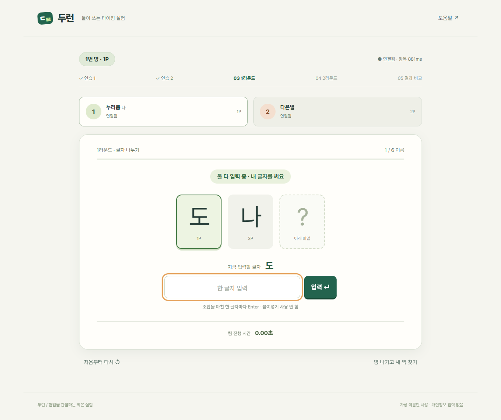

Duorun
Parallel vs Sequential Teamwork

Two players. One shared task.
Type the first two letters together. Once both are done, the final letter and its player are revealed.
Example: 박나현 — 1P types 박, 2P types 나, then 현 and its player appear.
In the sequential round, one player completes a name before the other starts.
Actual test capture with fictional names. This is a read-only preview; the private online game remains closed.